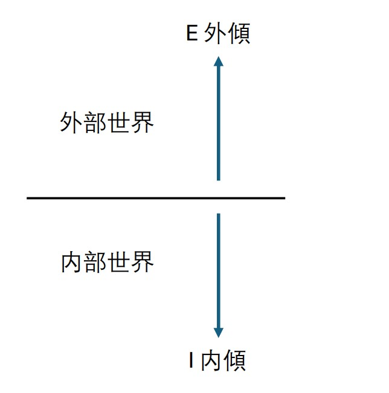
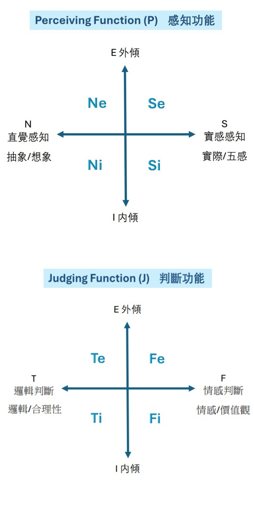

Ne 外傾直覺：探索外在世界的可能性，善於從周圍環境中提取靈感，並快速連結不同的想法，創造出新穎且富有想像力的點子。
特點：説話無厘頭、主題跳躍，想象力豐富，善於創新。
Ni 內傾直覺：深刻的洞察力，能夠透過反思和內省來理解和組織抽象概念，並預見未來的趨勢和潛在的可能性。
特點：對喜歡的事物有耐性研究，善於理解和組織混亂的言辭。
Se 外傾感知：活在當下，重視感官體驗，喜愛直接參與各種實際活動，並在生活中尋求即時的刺激和新鮮感。>特點：社牛，喜歡食買玩，喜歡任何新體驗，喜歡談話且善於回應，表情豐富誇張。
Si 內傾感知：觀察並記住當下的細節，善於從之前的記憶中學習，以此來指導當前的決策和行動。
特點：善於觀察，善於回憶細節，著重過往經驗，穩陣派。
Te 外傾思考：重視邏輯和效率，擅長組織和管理外部資源，目標為本，解決問題。
特點：領導者，有條理，行事高效率，善於解決問題。
Ti 內傾思考：著重自己內在的邏輯結構和分析，喜歡深入理解事物運作的邏輯，也重視問題的原因、解決的過程，而非結果。
特點：喜愛分析、推理、論證，對問題尋根究底，喜歡反駁，堅持自我邏輯。
Fe 外傾情感：情感和價值觀傾向來自外界，善於照顧別人感受、建立和維護人際關係，並努力在社交互動中創造和諧的氛圍。
特點：善於關心別人，希望大家都開心，寧願自己默默承受。
Fi 內傾情感：專注於個體的內心價值觀和感受，常常以個人的信念為基礎來做出決策，並對不符合內心價值的事情深感抵觸。
特點：堅持自我價值觀，或會固執、守舊，不因遷就別人而内耗。
I vs E，内向 vs 外向其實不是指喜不喜歡社交啦，正式譯法是内傾/ 外傾。
我們每個人的認知都有内在世界和外在世界，内在世界就是對自己的想法感受的整合和處理，而外在世界就是周圍的資訊，包括景象和其他人的想法感受。如果只是籠統地說一個人是内傾還是外傾就不夠精準了，因爲每個人都有一種最常用的認知功能，而這項功能才會決定你首選的内傾/ 外傾偏好。舉個例子，假設你數學很高分，文科的成績平平，但其他理科分數更低，如果只是將文科和理科的分數分別加總，或許文科的成績會更高，事實上你不過是偏科數學，是實實在在的一名理科生！所以，第一功能就好比你最擅長的科目！十分重要。
那......爲甚麽是N、S、T、F 四種功能？因爲我們每個人的認知其實都是由感知和判斷構成的，我們看到什麽、聼到什麽，接收到的訊號爲之感知，分為直覺N和實感S，而我們接收到資訊後會對事物作出判斷，分爲理性T和感性F。至於P和J……Perceiving和Judging，其實就代表感知和判斷呀！
不過為什麽J人會代表有計劃，P人代表隨性呢？
説起來就有點複雜：在mbti字母裏面，xxxJ 代表外傾判斷功能 Fe或Te，和内傾感知功能 Ni或Si，即例如INFJ 的J就代表F是Fe，N是Ni（詳見“如何找出自己的mbti”）。内傾感知（Ni/ Si）傾向先整合資訊而非立即作出反應，所以是習慣先計劃的J人，相反P人的外傾感知Ne和Se擅長根據當下環境作出反應，自然就會比較隨心，但也會更加「易話為」。
mbti的四個字母其實沒那麽重要。相信你們都試過、或看過別人，測試結果是兩種功能很相近，例如在16personalities網站測試出53%N，那是不是就以xNxx作爲mbti? 很有可能，當他測mbti，會發現Ni Ne的分數都比 Se低，其實是S人才對（因為第一功能）！所以，一來，我在mbti測試結果中也提供了兩個mbti選擇，二來，性格分析的部分是描述最高分的兩個功能，而非組成mbti的兩個功能（詳見“如何找出自己的mbti”），因為最強的功能才更能代表你。
mbti理論正式的排法是這樣的：例如INFJ，功能順序是Ni>Fe>Ti>Se，然而，甚少人的得分可以完美地匹配這個理論順序。為了簡化過程，我們取頭兩個順序Ni>Fe。
假設測試結果最高分的功能是Ni，那麽我們就要找符合相反的組別（即T或F）和相反的傾向（即e）（合起來就是Te或Fe）較高分的功能。假設Fe較高分：
1. 首先將N和F放進mbti，得出xNFx；
2. 再將第一功能的傾向放進mbti（例如現在第一功能Ni就是i内傾），得出INFx；
3. 最後，J代表判斷功能(T/F)外傾+感知功能(N/S)内傾，P則與之相反。
現在N内傾(i)+F外傾(e)，所以就在最後一個字母填上J，得出INFJ。
你會注意到，其實只取頭兩個功能得出mbti根本無法完全代表測試結果和你的性格，就算同一個mbti的人都可以在功能排序上有很大分別，所以mbti字母作為參考就好了，你的八維分數才是最重要的測試結果，代表了你的認知功能數值和傾向。
Ne 缺點：過度活躍症/ 瘋子
Ne人每秒鐘也會有新奇跳脫的點子，你每說一句説話他們都可以想到一個冷笑話/ 無厘頭的説話，所以跟Ne人相處的話，要讓他們先釋出自己的Ne，就等他説完冷笑話/ 突然蹦出來的點子再說正事，其實他們無心打斷你的。而且，Ne人接受任何的可能性，所以他們的思維很瘋，可能其他人不是那麽容易接受，所以跟Ne人相處的話，就當是打開一下腦洞，嘗試理解未曾觸及的思維吧！
Ni 缺點：完美主義者
Ni人做事總是追求完美、廢寢忘餐，或許他經常會不回你的訊息、不找你玩，其實他只是在專注自己熱愛的事情喔！你要給他多一點空間和等待，不要催促和打擾他，而且當他和你分享成果時千萬不可以敷衍了事！要嘗試深度思考和深入理解他的想法。
Se 缺點：健忘症/ 社交恐怖分子
Se人擅長反應，但缺點就是過目即忘，轉個頭就不記得了，要有心理準備他們會忘記了你們説過什麽，要經常像提醒老人家一樣提醒他們，他們每一次都會像第一次聽到那樣，最適合當IU的粉絲了。而且，他們是妥妥的社交恐怖分子，aka I人惡夢，但他們的熱情是來自對社交的真正熱愛，賞面的話就跟他們瘋一下吧。
Si 缺點：聾人/ 保守
Si人會吸收片面的環境資訊，即選擇性地接收跟本來記憶和認知吻合的資訊，常見於對話時過分著重某些字眼，忽略其他字眼，並忽略整體傳意，所以和Si人傳達資訊要盡量清晰和完整，當他們誤會的時候要有耐性並清晰地澄清。而且，Si人是妥妥的保守派，所以給他們介紹新活動/ 餐廳的時候要做好資料搜集，例如顧客評價、活動詳細資料，令他們評估過後認為安心就可以。
Te 缺點：解決問題忽略情感
Te人就是典型解決問題忽略情感的人，向他們表達煩惱的時候總會換來理性分析和解決辦法，更甚會被指揮（你應該怎樣做）。Fe人避雷。當然，其實他們也是好心想替你解決問題，不過是方式不同罷了，你可以理解他的善意，或者等情緒過了再找他咨詢......之類吧呵呵（面對世紀難題我也是不知道怎麽説。
Ti 缺點：語出傷人/ 習慣性反駁
Ti人的内在邏輯很強，遇到邏輯與其内在有抵觸的事會習慣排斥，有可能不為意説出傷害到你的説話，或因而經常反駁別人。你可以嘗試了解他背後的邏輯，其實他也不是有意令你不高興，只是希望解釋自己的邏輯，尋求一致性。
Fe 缺點：沒有缺點，就是會内耗
Fe是一種大愛的性格，先人後己，對別人幾乎沒有缺點，但自我内耗卻是相當嚴重，為了大家高興他們可以默默忍讓，硬説缺點可能對I人來説他們會有點過分關心，侵犯到I人的世界，但他們都這麽慘了，你就不能讓一下嗎？
Fi 缺點：自私/ 墨守成規
Fi人將自我感受放在首位，有時會顯得自私，只要自己不喜歡就不做，但其實大部分的Fi人都願意幫人，只有觸及自己價值和原則時才會解決拒絕，決不違背原則和超越底綫。跟Fi人相處時要理解他們擁有自己一套原則和價值，不要強求和挑戰他們的底綫，如果他們不想就不要勉強了。